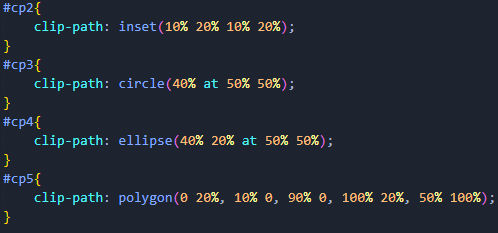

Clip-path
La propiedad Clip-path crea una región de recorte que establece qué parte de un elemento debe mostrarse. Se muestran las partes que están dentro de la región, mientras que las que están fuera están ocultas.
Valores:
- clip-source: Una url()referencia a un elemento SVG clipPath.
- basic-shape: Una forma cuyo tamaño y posición están definidos por el valor geometry-box. Si no se especifica ningún geometry-box, border-box se utilizará como cuadro de referencia. Uno de:
- inset(): Define un rectángulo insertado.
- circle(): Define un círculo utilizando un radio y una posición.
- ellipse(): Define una elipse utilizando dos radios y una posición.
- polygon(): Define un polígono usando una regla de relleno SVG y un conjunto de vértices.
- path(): Define una forma usando una regla de relleno SVG y una definición de ruta SVG.
- geometry-box: Si se especifica en combinación con basic-shape, este valor define el cuadro de referencia para la forma básica. Si se especifica por sí mismo, hace que los bordes del cuadro especificado, incluida cualquier forma de esquina (como un border-radius), sean la ruta de recorte. El cuadro de geometría puede tener uno de los siguientes valores:
- margin-box: Utiliza el cuadro de margen como cuadro de referencia.
- border-box: Utiliza el cuadro de borde como cuadro de referencia.
- padding-box: Utiliza el cuadro de relleno como cuadro de referencia.
- content-box: Utiliza el cuadro de contenido como cuadro de referencia.
- fill-box: Utiliza el cuadro delimitador del objeto como cuadro de referencia.
- stroke-box: Utiliza el cuadro delimitador del trazo como cuadro de referencia.
- view-box: Utiliza la ventana gráfica SVG más cercana como cuadro de referencia. Si viewBox se especifica un atributo para el elemento que crea la ventana gráfica SVG, el cuadro de referencia se coloca en el origen del sistema de coordenadas establecido por el atributo viewBox y la dimensión del tamaño del cuadro de referencia se establece en los valores de ancho y alto del atributo viewBox.
- none: No se crea ninguna ruta de recorte.
Ejemplos:
none
inset
circle
ellipse
polygon